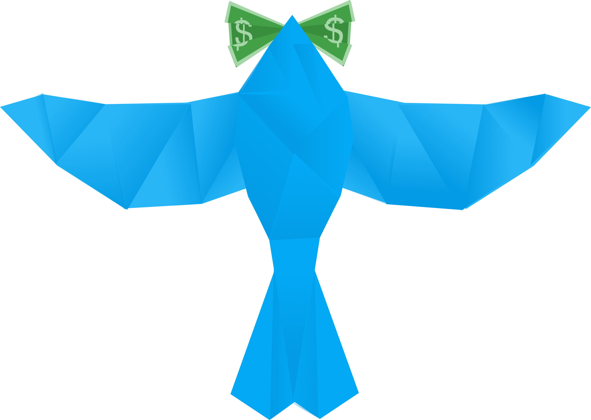
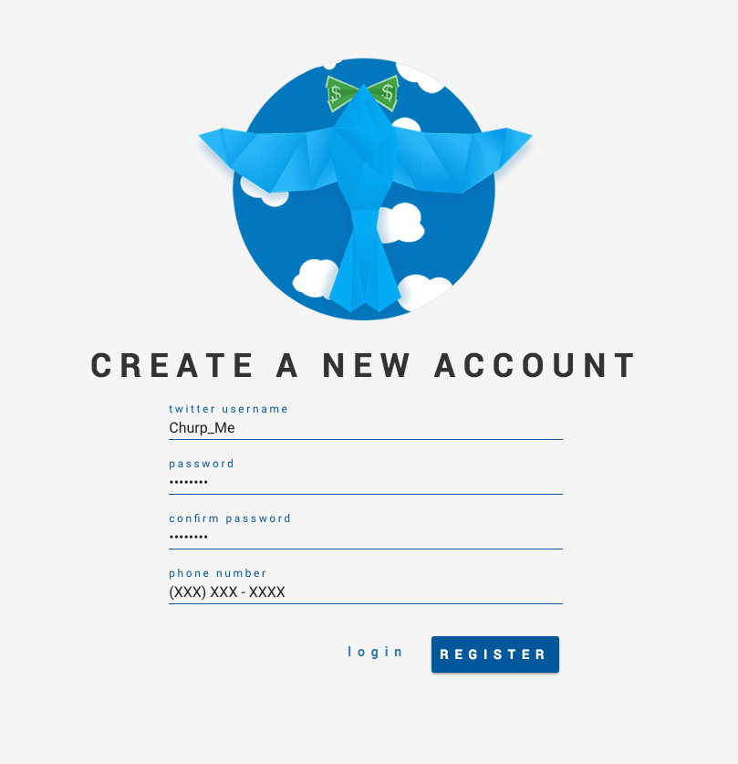
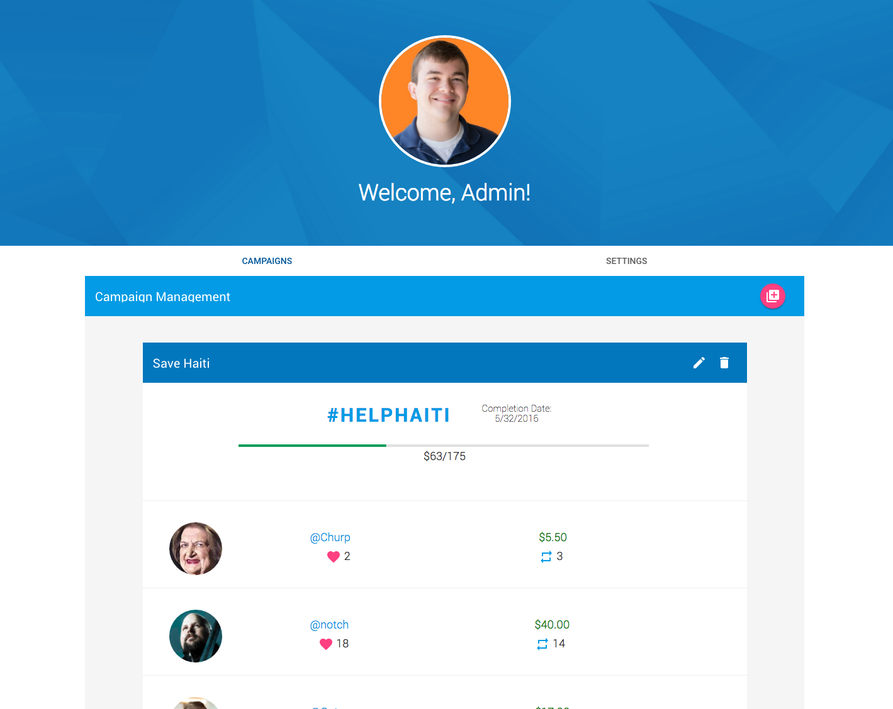
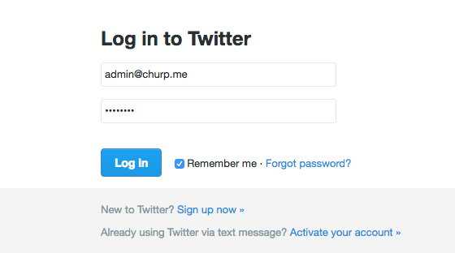
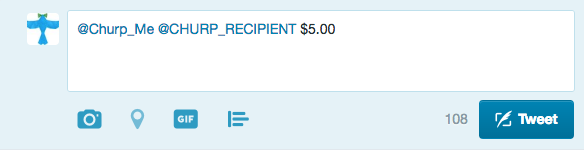
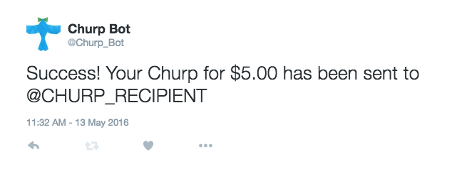

<link rel="import" href="../bower_components/paper-dialog/paper-dialog.html">
<link rel="import" href="../bower_components/neon-animation/neon-animations.html">
<link rel="import" href="../bower_components/neon-animation/neon-animated-pages.html">
<link rel="import" href="../bower_components/neon-animation/neon-animatable.html">
<link rel="import" href="../bower_components/paper-fab/paper-fab.html">
<link rel="import" href="../bower_components/paper-toolbar/paper-toolbar.html">
<link rel="import" href="../bower_components/iron-icons/iron-icons.html">

<dom-module id="tutorial-module">

    <style>
        paper-fab {
            --paper-fab-background: #0277bd;
            --paper-fab-keyboard-focus-background: var(--paper-light-blue-900);
        }
    </style>

    <template>
        <paper-dialog id="tutorial-dialog" entry-animation="scale-up-animation" exit-animation="fade-out-animation"
                      with-backdrop>
            <paper-toolbar id="tutorial-header">
                <span class="title">{{heading}}</span>
                <paper-fab icon="arrow-back" on-tap="_onPrevClick"></paper-fab>
                <paper-fab icon="arrow-forward" on-tap="_onNextClick"></paper-fab>
                <paper-fab icon="close" on-tap="closeDialog"></paper-fab>
            </paper-toolbar>
            <div class="wrap">
                <neon-animated-pages selected="0" entry-animation="[[entryAnimation]]"
                                     exit-animation="[[exitAnimation]]">
                    <neon-animatable>
                        <div class="logo-container">
                            
                        </div>
                        <div class="text-container">
                            <hr>
                            <h3>Hello, and welcome to Churp! Please take the time to review this short tutorial to
                                familiarize yourself
                                with the in-and-outs of our service. We're excited you decided to join us, and we hope
                                you'll find Churp
                                to be an easy to use and helpful resource. Please let us know if you have any questions
                                or concerns, and we'll
                                get back to you as soon as possible.</h3>
                            <h3>Thank you; and once again, welcome.</h3>
                            <hr>
                        </div>
                    </neon-animatable>

                    <neon-animatable>
                        <div class="image-container">
                            
                        </div>
                        <div class="text-container">
                            <hr>
                            <h3>Start by creating an account over at <a
                                    href="/register.html">http://churp.me/register</a>. All it requires is an active
                                Twitter account, a password, and you can add your phone number at this time too if you'd
                                like</h3>
                            <hr>
                        </div>
                    </neon-animatable>

                    <neon-animatable>
                        <div class="image-container">
                            
                        </div>
                        <div class="text-container">
                            <hr>
                            <h3>Once you are registered, you will be taken to the account settings page. From this page
                                you can control all
                                of the features your Churp account has to offer! The first tab contains information
                                about any campaigns you may
                                have launched; whereas the second tab has features like payment information, password,
                                and more.</h3>
                            <hr>
                        </div>
                    </neon-animatable>

                    <neon-animatable>
                        <div class="image-container">
                            
                        </div>
                        <div class="text-container">
                            <hr>
                            <h3>Now that you've made all the necessary configurations for your Churp account, you're
                                finally ready to start using
                                our service! Head over to <a href="http://twitter.com/login">Twitter</a> and login or
                                sign-up with the Twitter username
                                you linked to your Churp account</h3>
                            <hr>
                        </div>
                    </neon-animatable>

                    <neon-animatable>
                        <div class="image-container">
                            
                        </div>
                        <div class="text-container">
                            <hr>
                            <h3>After you've logged in to Twitter, sending a Churp is easy! Just simply follow this
                                format: </h3>
                            <h3><span class="blue">@Churp_Me @CHURP_RECIPIENT</span> <span
                                    class="green">$DOLLAR_AMOUNT</span></h3>
                            <h3>The <span class="blue">CHURP_RECIPIENT</span> is the Twitter username of the person
                                you'd like to send money to
                                and the <span class="green">DOLLAR_AMOUNT</span> is the amount of money to spend,
                                formatted with a <em>mandatory</em> dollar sign and an <em>optional</em> decimal value.
                                Once your done composing your message, just tap the Tweet button to send your Churp
                            </h3>
                            <hr>
                        </div>
                    </neon-animatable>

                    <neon-animatable>
                        <div class="image-container">
                            
                        </div>
                        <div class="text-container">
                            <hr>
                            <h3>If everything was formatted correct, and both you and the person you are trying to send
                                money to have set up an account on <a href="http://churp.me/register">churp.me</a>
                                then you should receive a confirmation reply from our Churp Bot detailing the Churp
                                you just sent. Otherwise, if there were any errors,
                                you'll receive a reply stating what went wrong and how you can fix it</h3>
                            <h3> And that's all there is to it! You're now ready to begin using Churp. Good luck!</h3>
                            <hr>
                        </div>
                    </neon-animatable>
                </neon-animated-pages>
            </div>
        </paper-dialog>
        <paper-fab id="info-fab" icon="info-outline" on-tap="openDialog"></paper-fab>
    </template>

    <script>
        Polymer({
            is: 'tutorial-module',

            properties: {
                heading: {
                    type: String,
                    value: 'Welcome to Churp!'
                }
            },

            openDialog: function () {
                document.querySelector('neon-animated-pages').selected = 0;
                this.updateTitle();
                document.getElementById('tutorial-dialog').open();
            },

            closeDialog: function () {
                document.getElementById('tutorial-dialog').close();
            },

            _onNextClick: function () {
                var pages = document.querySelector('neon-animated-pages');
                this.entryAnimation = 'slide-from-right-animation';
                this.exitAnimation = 'slide-left-animation';
                pages.selectNext();
                this.updateTitle();
            },

            _onPrevClick: function () {
                var pages = document.querySelector('neon-animated-pages');
                this.entryAnimation = 'slide-right-animation';
                this.exitAnimation = 'slide-from-left-animation';
                pages.selectPrevious();
                this.updateTitle();
            },

            updateTitle: function () {
                var pages = document.querySelector('neon-animated-pages');
                switch (pages.selected) {
                    case 1:
                        this.heading = 'Registering for Churp';
                        break;
                    case 2:
                        this.heading = 'Setting Up Your Account';
                        break;
                    case 3:
                        this.heading = 'Using Twitter';
                        break;
                    case 4:
                        this.heading = 'Sending Your First Churp';
                        break;
                    case 5:
                        this.heading = 'Success!';
                        break;
                    default:
                        this.heading = 'Welcome to Churp!';
                }
            }
        })
    </script>

</dom-module>